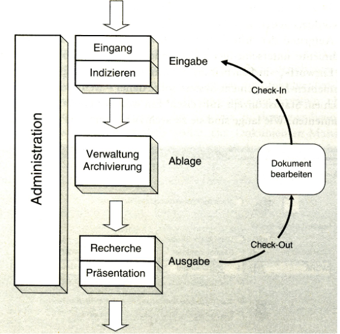

”Werden Zeichen einem Alphabet zugeordnet, kann man von Daten sprechen. Die Anreicherung mit zusätzlichem Kontext verschafft den Daten Bedeutung, so dass Information entsteht, bspw., darüber, dass mit 0,87 der Wert des Dollars in EUR gemeint ist.”
Definition Information
- Information ist ein immaterielles Modell eines Originals für Zwecke eines Subjekts (Erzeuger der Information). [Kretschmer]
- Information ist das Gut, aus welchem sich Wissen ergibt. Information ist ein Fluss von Nachrichten. [Nonaka]
Abb.: Modell wovon wozu für wen
Definition Wissen
- Wissen (knowledge) ist eine Mischung aus Erfahrungen, Werten, Einsichten und Kontextinformation, welche einen Rahmen für die Evaluierung und die Einordnung neuer Erfahrungen und Informationen bildet.
- Wissen entsteht und wird angewandt im Verstand (mind) von Wissenden. [DP98]
- Wissen ist die Summe aller Kenntnisse und Fähigkeiten, die Individuen oder Gruppen von Individuen nutzen können, um beobachtbare Handlungen hervorzubringen.
Explizites Wissen
Explizites Wissen (explicit or codified knowledge) ist Wissen, welches in eine formale, systematische Sprache übersetzt werden kann.
Stilles Wissen
Stilles Wissen (tacit knowledge) ist Wissen, das eine persönliche Qualität hat, welche seine Formalisierung und Kommunikation erschwert.
SECI-Modell
Das SECI-Modell beschreibt die Übergänge der einzelnen Wissensformen
Abb.: SECI-Modell nach Nonaka
Socialization
Stilles Wissen kann zwischen Individuen direkt durch Beobachtung (ohne Sprache) ausgetauscht werden. Z. B. ein Lehrling, der durch Beobachtung, Nachahmung und Übung lernt.
Externalization
Stilles Wissen wird in explizites Wissen umgewandelt.
Combination
Austausch von Wissen durch Meetings, Telefongespräche etc. Durch diesen Austausch und die Kombination von explizitem Wissen kann neues Wissen entstehen.
Internalization
Explizites wissen wird in stilles Wissen umgewandelt (lernen).
TODO Beispiele
Wissensspirale
Wenn Wissen von Individuen und größer werdenden Gruppen durch alle vier Arten der Wissenserzeugung geht, erhalten wir die Wissensspirale:
Abb.: Wissensspirale
Concept of Ba
Ba ist ein gemeiunsamer Raum, um Beziehungen zu schaffen
physisch: Büroräume
virtuell: Web oder Telefonkonferenz Abb.: SECI-Modell angepasst an das Concept of Ba
Originating Ba
Individuen teilen Gefühle, Erfahrungen. Vision und Kultur.
Interacting Ba
Auswahl von Mitarbeitern mit den richtigen Fähigkeiten für ein Team.
Cyber Ba
Kollaborative Umgebungen (IT).
Exercising Ba
Training mit Mentoren. Training on the Job.
Definition Kognition
Kognition: Sammelbegriff für alle Prozesse und Strukturen, die mit dem Wahrnehmen und Erkennen zusammenhängen (Denken, Erinnerung, Vorstellen, Gedächtnis, Lernen, Planen u. a.).
Lernzyklus nach dem Münchener Modell
Abb.: Lernzyklus nach dem Münchener Modell
Wissensmanagement
Wissensmanagement ist eine Managementaufgabe, die darauf abzielt, den Lernzyklus von Individuen oder Gruppen von Individuen zu fördern.
- Will man in einer großen Organisation Wissen finden, so ist das nach unserer Definition gleichbedeutend mit dem Finden von Experten.
- Dies kann man mit Kollaborationsplattformen bzw. sozialen Netzwerken erreichen.
Informationsmanagement
Informationsmanagement (IM) ist das Management der Informationswirtschaft, der Informationssysteme, der Informations- und Kommunikationstechniken sowie der übergreifenden Führungsaufgaben.
• Das Ziel des IM ist es, im Hinblick auf die Unternehmensziele den bestmöglichen Einsatz der Ressource Information zu gewährleisten.
• IM ist sowohl Management- wie Technikdisziplin und gehört zu den elementaren Bestandteilen der Unternehmensführung.” [Krc15]
Modell des IM
Personalmanagement
Unter Personalmanagement versteht man die Gesamtheit der mitarbeiterbezogenen Gestaltungs- und Verwaltungsaufgaben im Unternehmen.
Personalbedarfsplanung
Welche und wie viele Arbeitskräfte werden in Zukunft benötigt? Vergleich mit aktuellem Bestand.
Personalbeschaffung
Reicht das bestehende Personal nicht aus bzw. lässt sich dieses nicht weiterentwickeln, so muss neues Personal beschafft werden. Themen: Personalmarketing, Personalauswahl, interne und externe Personalrekrutierung.
Personaleinsatz und -verwaltung
den Arbeitskräftepool möglichst effizient alloziieren, d.h. die richtigen (qualitativ und quantitativ) Mitarbeiter am richtigen Ort und zur richtigen Zeit vorzuhalten.
... dient zum einen dazu, die qualifikatorische Einsetzbarkeit der Mitarbeiter im Kontext einer sich permanent ver ̈andernden Arbeitswelt sicherzustellen. Zum anderen hilft gezielte Personalförderung, den Bedarf an Fach- und Führungskräften im Unternehmen zu decken
Personalabbau
Die Ursachen für den Abbau von Personal können zum einen individuell im Mitarbeiter begründet, zum anderen in allgemeinen, vom Unternehmen oder dessen Umwelt ausgehenden Änderungen liegen
Personalcontrolling
Erfolgsorientierte Steuerung und Kontrolle des Personaleinsatzes als separater Teil des Unternehmenscontrollings
Definition Wissensbarriere
Eine Wissensbarriere ist ein Sachverhalt, der dazu führt, dass der individuelle oder organisationale Lernzyklus gestört wird.
Wissensbilanz
Human-Kapital
Kompetenzen, Fertigkeiten und Verhaltensweisen der einzelnen Mitarbeiter. Bsp.: Mitarbeiterqualifikation, Mitarbeitererfahrung, Soziale Kompetenz
Struktur-Kapital
Strukturen die Mitarbeiter einsetzen, um in ihrer Gesamtheit die Geschäftstätigkeit durchzuführen, also um produktiv und innovativ zu sein. Bsp.: Unternehmenskultur, Informationstechnik, Wissenstransfer
Beziehungs-Kapital
Alle Beziehungen zu externen Gruppen und Personen, die in der Geschäftst ̈atigkeit genutzt werden (können). Bsp.: Beziehungen zu Kunden, Lieferanten und Investoren
Kategorien von Daten
strukturiert
Wir nennen Daten strukturiert, wenn sich ihre wesentlichen Informationen dank einer inhärenten, von außen fest vorgegebenen Struktur automatisch extrahieren lassen.
Bsp.: Kundendaten in einer relationalen Datenbank
semistrukturiert
Daten sind semistrukturiert, wenn sie wesentliche strukturelle Informationen in sich tragen.
Bsp.: XML, JSON
unstrukturiert
Wir sprechen von unstrukturierten Daten, wenn sie keine Struktur besitzen, die dabei hilft, ihren wesentlichen Informationsgehalt automatisch zu extrahieren.
Bsp.: Normale Textdokumente, Audiodateien, Videodateien
CRUD-Matrix
Lorem, ipsum dolor.
Definition Dokument
Ein Dokument ist ein Träger von inhaltlich zusammengehörenden Informationen, die nicht ohne erheblichen Bedeutungsverlust weiter unterteilt werden können
Definition Dokumentenmanagement
• Dokumentenmanagement ist die Verwaltung von Dokumenten
• Dokumentenmanagement ist die Speicherung, Inventarisierung und Kontrolle von elektronischen und papier Dokumenten.
Wichtig! In diesem Zusammenhang wird nicht die erstellung von Dokumenten genannt. Dies ist auch kein Teil des Dokumentenmanagement.
Aufgaben des Dokumentenmanagements:
Kennzeichnung und Beschreibung (Metadaten)
Versionierung und Historisierung
Ablage und Archivierung
Verterilung und Umlauf
Suche nach Dokumenten und Dokumenteninhalten
Schutz vor Verfälschungen und Missbrauch
Langfristiger Zugriff
Lebenslauf und Vernichtung von Dokumenten
Regelung von Verantwortlichkeiten für ihnalte und Verwaltung
Definition Dokumentenmanagement-System
Ein Dokumentenmanagement-System im engeren Sinne befasst sich mit der Verwaltung von Dokumenten, deren Status, Struktur, Lebenszyklus und Inhalt.
Ein Dokumentenmanagement-System im weiteren Sinne besitzt zusätzlich weitere Funktionalitäten wie z. B. Schrifterkennung, automatische Indizierung, Computer Output to Laser Disc, Vorgangssteuerung, Scannen, Publizieren.
Aufbau

Grundstruktur eines Dokumentenmanagement-System
Eingang
Physische Übernahme in der Dokumente in das DMS. Papierbehaftete Dokumente werden durch Scannen in NCI verwandelt und ggf. durch OCR in CI.
Indizieren
Versehen mit Attributen, die ein Wiederfinden ermöglichen – z. B. Einordnung in Klassen, Stichworte (Tags)
Verwaltung
Ablage entsprechend der Klassifizierung und speichern der Metadaten mit einer Referenz zum Dokument. Auch Einordnung in Mappen (Container, Collection), welche meist eigene Metadaten haben.
Archivierung
Speichern der Dokumente und Metadaten. Das Archivierungssystem (z. B. Jukeboxen, Bandarchiv etc.) ist weitgehend unabhängig vom DMS. Caching, Organisation der Sicherung, Revisionssicherheit WORM.
Recherche
Struktursuche, Volltextsuche (komplexes Thema: Information Retrieval)
Präsentation
Anzeigen, Ausdrucken.
Definition: Coded Information (CI)
Non-Coded Information (NCI) sind Bilder, Sprache, Ton, Video etc., die für Rechner nicht direkt verarbeitbar sind
Definition: Non-Coded Information (NCI)
Coded Information (CI) sind maschinell direkt interpretierbare und direkt weiterverarbeitbare Zeichen im Gegensatz zu NCI. Z. B. ASCII, EBCDIC
Vertiffen
Vertiffen ist die Überführung von strukturierten- oder semistrukturierten Daten in unstrukturierte Daten.
Bsp.: Bilder von Auszügen erstellen um die Authetizität zu gewerleisten. Wurde bei Banken eine Zeit lang gemacht.
Metadaten
Definition
Metadaten sind Daten über Daten.
Beschreibende Metadaten
Metadaten zum Finden eines Objekts – z. B. Titel eines Buches oder ISBN.
Administrative Metadaten
Hintergrundinformation, die zum Speichern und Zugriff von Daten gebraucht wird.
Technische Metadaten
z. B. Pixelzahl eines Bildes.
Rechtliche Metadaten
z. B. Copyright
Preservational Metadaten
z. B. Informationen, welche den Experten für Langzeitarchivierung erlauben nachzuvollziehen, welche Operationen an dem Foto durchgeführt wurden, um es in Zukunft nutzen zu können.
Strukturierte Metadaten
Kleinere Elemente werden zu komplexen Objekten zusammengefügt – z. B. Collections.
Dublin Core
Das Dublin Core Metadata Element Set wurde 1995 bei einem Workshop in Dublin kreiert und hat sich als der kleinste gemeinsame Nenner für die Beschreibung von Ressourcen etabliert.
Contributor - Mitarbeiter an dem Projekt
Coverage - Abdeckungs-/Gültigkeitsbereich, für den das Dokument relevant ist
Creator - Ersteller der Ressource
Date - Datum der Erstellung der Ressource
Description - kurze Beschreibung der Ressource
Format - Datei Format
Identifier - Eindeutiger Identifizierer der Ressource z. B. DOI
Language - Sprache der Ressource
Publisher - Herrausgeber der Ressource
Relation - Ressource zu der die beschriebende in Relation steht
Rights - Informationen über die Rechte der Ressource
Source - Quelle für die beschriebende Ressource
Subject - Das Thema der Ressource
Title - Title der Ressource
Typ - Der Typ oder das Genre der Ressource
Interne- und externe Metadaten
Externe Metadaten - Eigene Datei in der die Metadaten vorliegen. Referenz auf die Ressource in Form von URI nötig
Interne Metadaten - Metadaten liegen ind er Datei selber. Z. B. ID3 Tags in mp3s
Andre Metadatenformate
Exif - Metadaten in Fotos wier Blende, ISO, Geo usw.
MRC (Machine Readable Catalog) - kodierte Darstellung 100= Author ... Folge aus Speichermangel
Bibtex, Endnote
Metadaten Mapping
Überführung von einem Metadatensystem in ein andres.
Definition: Content
Content ist die von Personen erzeugte und in medienspezifischer Form präsentierte digitale Information.
Definition: Content Management
Content Management beschreibt die Planung, Verwaltung, Steuerung und Koordination aller Aktivitäten, die auf den Content und dessen Präsentation in Unternehmen abstellen.
Definition: Content Management Systeme (CMS)
Content Management Systeme (CMS) sind Anwendungen, die das Erstellen, die Kontrolle, die Freigabe, die Publikation, die Archivierung und die Individualisierung von Inhalten im Inter-, Intra oder Extranet ermöglichen.
Definition: Web Content Management(WCM)
Web-Content-Management (WCM) ist bestrebt, eine zentrale Verwaltung des Layouts zu ermöglichen, ein Link Management zur konsistenten Pflege der Hyperlinks zu unterstützen, automatisierte Navigationshilfen einzuführen und Inhalt und Layout strikt zu trennen.
Definition: Enterprise-Content-Management (ECM)
Enterprise-Content-Management (ECM) besteht aus Technologien, Werkzeugen und Methoden, um Inhalte (Content) unternehmensweit zu erfassen, zu verwalten, zu speichern, zu schützen und zu verteilen.